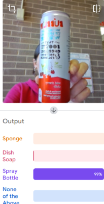

← Back to Model Page
Designing Inclusively
Initial Data Considerations
To design our model with inclusivity at the forefront, we primarily referenced Joy Buolamwini’s book Unmasking AI. The text focuses on her experience uncovering the implicit biases encoded into facial recognition software. Her work showed that these algorithms were significantly more accurate at identifying light-skinned males than darker-skinned females – for example, IBM software was 34.4 percent more accurate for lighter males than darker females (Buolamwini 141).
While our model is less directly linked to topics of human diversity and discrimination, we still used Buolamwini’s work to improve its accuracy and inclusivity. When Buolamwini examined existing datasets of faces, she discovered they often contained disproportionately light faces – for example, the 86% of the Adience dataset, a publicly available facial dataset developed for gender research, consisted of lighter faces (Buolamwini 110). This is an example of power shadows, “cast when the biases or systemic exclusion of a society are reflected in the data” (Buolamwini 95).
This concept can be generalized to suggest that the more or less diverse a data set, the more or less a model will accurately identify diverse objects – in our case, cleaning products. To minimize this issue, we took pictures of several different objects within each of our main classes (spray bottle, sponge, and dish soap). Spray bottle, for example, is trained on bottles of various shapes and colors. These include a thin, transparent bottle with blue fluid; a round, white bottle; a bottle with a bright yellow label; and a bottle with a yellow and green label. While this does not capture the full variety of spray bottles available for purchase, we attempted to maximize variety within our constraints (objects that we owned or that were easily accessible to us).
Early in our design process, we also considered creating a vacuum cleaner class. However, since we have limited access to a variety of vacuum cleaners, the concept of power shadows again suggests that our model accuracy would have likely been lower for this class due to limited training data. We decided to eliminate vacuums from our current implementation and leave this as a potential future direction due to our inability to provide proper representation at this time.
Diversifying Data
While choosing training data in a variety of shapes, sizes, and colors was intentional, we did not initially consider the importance of lighting conditions and background colors. This was a misstep on our part, as the first iteration of our model struggled to accurately identify objects that were not brightly lit or that were not paired with light-colored backgrounds. As Buolamwini states, “well-lit environments… [do] not equip systems for unconstrained environments, also known as the real world, where most people do not walk around with studio-quality lighting” (Buolamwini 189). This led us to diversify our data to include images in bright fluorescent lighting, warm lighting, and dim lighting. We also added additional images with dark-colored backgrounds. These changes significantly improved model accuracy.
Data Limitations
Despite our efforts to include diversity in each of our data sets, we acknowledge that imbalances still exist due to the fact that we had more access to certain types of products. Spray bottle, for example, has the most data diversity in terms of product color and shape, with four different types of spray bottles photographed. Sponge has the most diversity in terms of lighting and background contrast, but the least variety in product type, with only two sponges photographed. Dish soap is our most balanced data set in terms of lighting and background, as well as color and shape, but it had the lowest amount of data overall. While our model performed moderately well in tests, dish soap was misidentified more frequently than spray bottles and sponges, underscoring the importance of Buolamwini’s call for balanced training data.
Buolamwini’s work also led us to consider cultural and location-based differences in cleaning products. As UW-Madison students, we primarily have access to supplies sold in local stores. While many of these supplies are produced by name brands sold across the US, products can differ widely by country due to differing regulations and markets. For example, while cleaning products sold in Brazil follow similar international regulations as Europe and the United States, they have more lax research study requirements for new products, less guidance for applicants, and reduced bureaucracy (Silva, et al.). This contributes to differing product availability. Additionally, cleaning methods and preferences vary by culture – for example, Americans largely prefer chemical cleaning aids, while almost half of Japanese people do not use chemicals (Kaercher). Our US-centric training data suggests that our current model will have higher accuracy for US-based users. A potential future direction for this project is to solicit training data from individuals in other countries, specifically on products that are representative of local cleaning markets and preferences.
Training Process
To create our model, we used Teachable Machine, Google’s streamlined web service for making AI algorithms. We initially added three classes – sponge, dish soap, and spray bottle – and uploaded our training data to each.
We found that our first version of the model worked fairly well when presented with an object that fit into one of our three classes, but it struggled when presented with objects that did not. This prompted us to add a “none of the above” class, which we trained on “random” non-cleaning products such as a microwave, a backpack, and selfies. This significantly reduced early misidentification issues, such as repeatedly determining that images of ourselves were, in fact, spray bottles – an entertaining but nonetheless significant problem. In line with Buolamwini’s work, one way we could improve the inclusivity of this classification would be to add more diverse “selfie” images, since our current data consists primarily of light skin tones due to our group’s demographics.
Additional tests showed that the model continued to have reduced accuracy in low-light conditions, as well as in conditions with low background contrast. This prompted us to diversify our data to include images taken in these conditions. Sponge data, in particular, was significantly expanded to include differing lighting conditions. This significantly reduced “flickering”, in which the model rapidly switches between correct and incorrect identifications.

As you can see in the screenshot to the left, the model was misidentifying my Bubblr as a spray bottle. This is probably because it is a tall cylinder and the way it was being held was similar to how we held the spray bottles.
Results & Future Directions
Narrowing the Digital Divide
The current version of our model exhibited a moderate-to-high level of accuracy in our tests. However, it continues to display some flickering between correct and incorrect identifications. Our tests showed that this behavior is significantly worse when using low-quality video feeds, such as computer webcams, and when there is minimal color contrast between an object and the background. Since certain users, such as those who are low-income or in rural areas, may not have access to high-quality cameras due to the digital divide (Syracuse), this is a significant concern in terms of ensuring equity in our model. Future development would include diversifying datasets to represent a wider variety of camera qualities.
Balancing Dataset
We also note that out of our three categories (dish soap, sponge, and spray bottle), dish soap performs the worst in terms of accuracy. In line with Buolamwini’s work, this can likely be attributed to the fact that dish soap has the smallest data set (around 300 images, as opposed to around 500 for both sponge and spray bottle). A priority for future development would be to diversify this set with at least one additional product color or shape.
User Testing
Finally, we acknowledge that our tests, in and of themselves, were limited by the objects that we had access to. We primarily tested our model on the very same objects that it was trained on (for example, a yellow and green sponge, and a blue spray bottle). Since we made significant efforts to diversify training data within our limitations, it is our hope that our model will still perform with a moderate-to-high level of accuracy for products that it was not tested on. User feedback will guide the addition of any future training data.
Cultural Diversity
As previously noted, our model also largely excludes products that are not easily accessible in the Madison, Wisconsin area. A future direction, while outside the scope of this project, could be to solicit data from individuals in other countries, as well as those who culturally use different styles of cleaning products. This would significantly improve cross-cultural inclusivity and minimize data bias.
References
Buolamwini, Joy. Unmasking AI: My Mission to Protect What Is Human in a World of Machines. Random House, Imprint and Division of Penguin Random House LLC, 2024.
Everyone Likes It Clean - An International Cleaning Survey, www.kaercher.com/us/inside-karcher/newsroom/kaercher-stories/international-study-everyone-likes-it-clean.html. Accessed 14 Apr. 2026.
Silva, Elaine & Moura, Italo & Moita Neto, Jose. (2023). CLEANING PRODUCTS REGULATION IN THREE WORLD MARKETS: THE BRAZILIAN CASE EFFECTIVENESS. Veredas do Direito Direito Ambiental e Desenvolvimento Sustentável. 10.18623/rvd.v20.2543-ing.
“What Is the Digital Divide? Meaning, Causes & Impact.” iSchool, 2 Apr. 2026, ischool.syracuse.edu/what-is-the-digital-divide/.